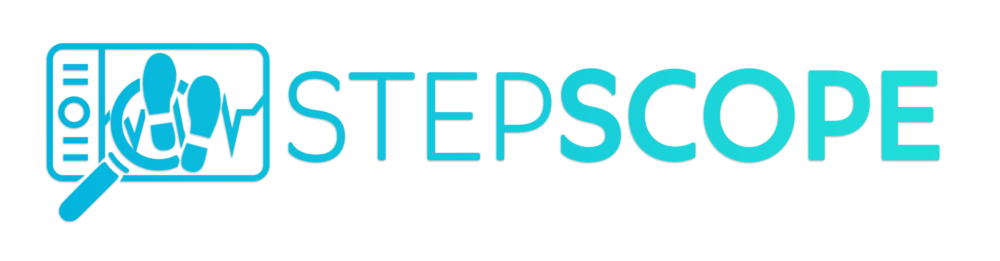
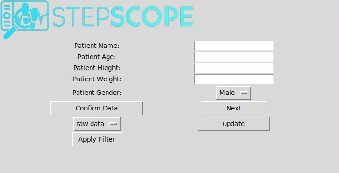
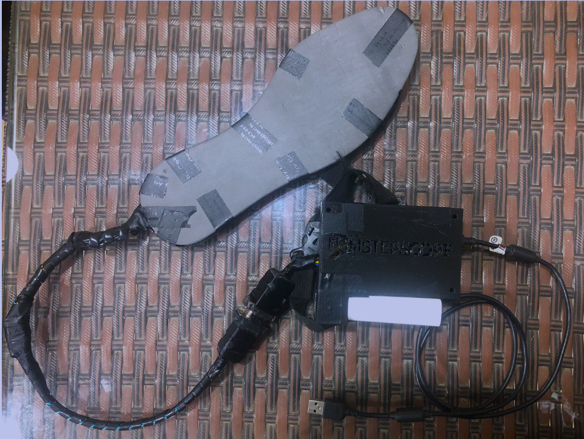

Step Scope
Step Scope is a project developed as part of the "Biomedical Engineering" course supervised by Human Centered Mechatronics Lab @ Faculty of Engineering - Ain Shams University, Egypt.
The main objective of this project is to design and develop a wireless, portable, and wearable system that utilizes inertial measurement units (IMUs) and force-sensitive resistors (FSRs) to monitor foot plantar pressure and gait in individuals with diabetic foot disease (DFD) or other neurological abnormalities affecting gait.
Grade achieved: A
You can check the project on Github.
- Real-time visualization of foot pressure using color coding
- Measurement of various spatiotemporal gait parameters
- Detection of gait events and phases
- Analysis of shank kinematics
- Estimation of the center of pressure (CoP)
- Assessment of patient stability based on FSR and IMU data
It shows the GUI where you enter the data of the patient.

{kind=link}
Example of the working project:
This shows the real-time visualization of the foot pressure, and whether the connection is made between the ESP and the the GUI or not. it shows the knee angle knowing the angle of the shank and thigh.

Hardware of the Project:

{kind=link}
Below is a video showing the project: